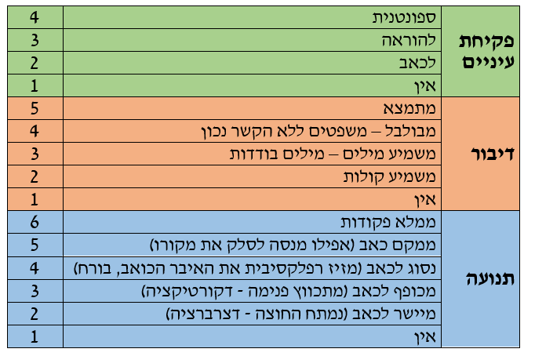
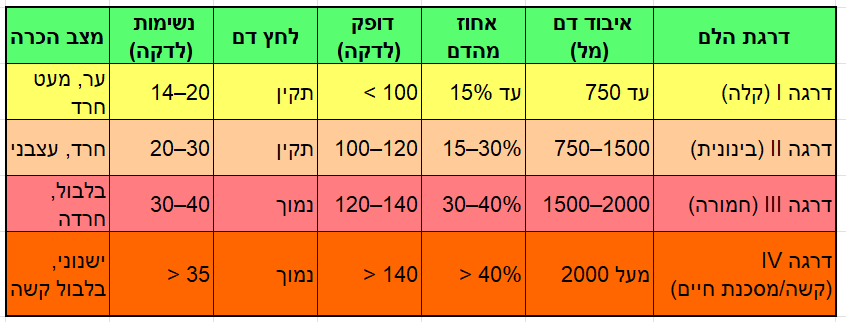
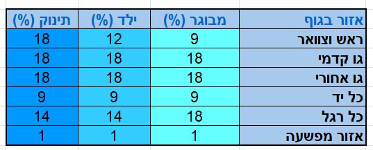

חזרה לתפריט הראשי
←
חזרה
סכימת טיפול בפצוע טראומה
תפריט ראשי
סכימת טיפול בפצוע בודד
S בטחון המטפל והמטופל
● התרשמות מזירת האירוע ומנגנון הפציעה:
● קבלת דיווח, בחינה ויזואלית, סיפור מקרה
● עצירת דימום משמעותי כולל אזור מעבר (בית שחי, מפשעה)
● דיווח ראשוני
A נתיב אויר
●
בדיקת הכרה A V P U
●
התרשמות מדרכי האוויר של הפצוע:
☐
התבוננות, קולו של הפצוע, פתיחת פה (בדיקת הפרשות / סימני כוויות או שאיפת עשן בלוע), בדיקת צווארו של הפצוע (סימני חבלה / המטומה מתפשטת)
●
סילוק הפרשות במידת הצורך
●
פתיחת נתיב אוויר: הטיית ראש לאחור /J.T בחשד לעמ''ש/צ
●
החדרת מנתב אוויר
●
קבלת החלטה בנוגע לנתיב אוויר דפניטיבי
●
התרשמות מחבלה / דימום קרקפת, פנים, עורף, צוואר
B נשימה
●
חשיפת בית חזה: התרשמות מחבלה / פציעה חודרת
●
בדיקת נשימה איכותית ועליית בית חזה דו''צ: 2 ידיים על בית החזה/ האזנה
●
בדיקת נשימה כמותית (30 שניות)
●
N.A וקבלת החלטה בנוגע לנתיב אוויר דפניטיבי ו/או נקז חזה
●
מתן חמצן וניטור סטורציה
C זילוח דם
●
בדיקת דופק איכותי רדיאלי / פמורלי / קרוטידי (נמוש / לא, איטי / מהיר, חלש / חזק), כמותי (15 שניות)
●
התרשמות מסימני הלם נלווים: חיוורון, הזעה, טמפ' עור נמוכה, מילוי קפילרי איטי
●
אופציה לפינוי מידי, השלמת סכמה במהלך הפינוי, דיווח!
●
פתיחת וריד איכותי
●
החלטה על טיפול תרופתי ובקרת נוזלים
●
חיפוש אחר דימומים נוספים ועצירתם ע''י חבישה / פקינג
D מצב הכרה
●
בדיקת הכרה חוזרת A V P U:
☐
במידה ויש הדרדרות במצב ההכרה יש לחזור לשלב הA
●
בפצוע מחוסר הכרה בדיקת אישונים: סימטריה, גודל צר / מורחב ותגובה לאור
●
בדיקת תנועת גפיים בהוראה לקול בפצוע בהכרה (ידיים ורגליים)
●
התרשמות מחבלה / דימום באזור מעבר בית שחי / מפשעה, אגן, ידיים ורגליים
●
הערךGCS
E חשיפה
●
השלמת הפשטה מלאה ועצירת דימום עם מציאתו
●
השלמת בדיקת גוף כללית
●
ראש * צוואר * עורף * חזה * בטן * בית שחי * ידיים * אגן * מפשעה * רגליים *גב הפיכה לשני הצדדים
●
השכבה על אלונקה: בידוד מהקרקע וכיסוי הפצוע, קיבוע ללוח גב בעת הצורך הכנה לפינוי
●
דיווח: דגש על דחיפות הפינוי והעברת דיווח בהקדם ליעד הפינוי
סקר החייאה
●
המשך טיפול ע''פ הממצאים והאבחנה
●
סקר שניוני
☐
ניטור והערכה מחודשת של הפצוע
☐
המשך ביצוע אנמנזה מקיפה יותר
☐
טיפול בכאב
☐
חבישות, קיבועים והמרות במידת הצורך
הגדרת חומרת פציעה
●
פצוע קל
● פצוע שאין לו סימנים לפגיעה במערכות חיוניות/מרכזיות כמו לב, ראש, חזה, בטן או שאין לו סימנים לסכנה לאיבר.
●
פצוע בינוני
● פצוע עם סכנה לאיבר או פצוע עם פגיעה במערכת מרכזית אבל ללא סימנים וסימפטומים שמאששים את הפגיעה (לדוגמא–פצוע עם חבלת ראש קשה ללא שינויים במצב הכרה).
●
פצוע קשה
● פגיעה במערכת מרכזית עם סימנים לכך–פצוע בטן שוקי, פצוע חזה, עם סימנים של מצוקה נשימתית.
●
פצוע אנוש
● פצוע עם פגיעה במערכת מרכזית ושיש לו ירידה או אין לו אחד מסימני חיים (מוח או נשימה).
הגדרת נפגע לא יציב
☐
חסימה או איום על נתיב האוויר וכשלון הניסיונות למתן מענה
☐
בעיה נשימתית (טכיפניאה >30 או ברדיפניאה <8 או סטורציה <90%) שלא נפתרה
☐
חשד לדימום פנימי בלתי נשלט (צוואר, חזה, בטן, אגן) המלווה בסימני הלם
☐
סבירות גבוהה להתדרדרות משמעותית במצב הרפואי בטווח של דקות
☐
צורך בהליך רפואי חיוני שכשל (אינטובציה, גישה ורידית, ניקוז חזה)
אין להתעכב בשטח למעט פעולות מצילות חיים. יש להיערך לפינוי מיידי
טיפול בפינוי בנפגע לא יציב
☐
ניטור מדדים חיוניים ומצב הכרה. מדד גלזגו
☐
השגת גישה ורידית או IO
☐
שקול מתן עירוי נוזלים או פלזמה
☐
שקול מתן הקסקפרון
☐
העבר דיווח מקדים לבית החולים
☐
שקול טיפול בכאב
☐
בצע הערכות מדדים חוזרות
טיפול בנפגע יציב בפינוי
☐
נטר מדדים חיוניים ומצב הכרה
☐
שקול התקנת עירוי וביצוע פעולות משלימות
☐
שקול צורך בדיווח מקדים לבית החולים
☐
הערך את רמת כאב וטפל בהתאם
☐
בצע הערכות מדדים חוזרות
יעדי פינוי
☐
נפגע לא יציב - פנה לבית החולים הקרוב!
☐
פגיעת ראש מבודדת + נפגע יציב - שקול פינוי למרכז נוירוכירורגי
☐
זמן פינוי ממושך - שקול חבירה למסוק
☐
זמני פינוי דומים - העדף פינוי למרכז-על
דיווח לבית החולים
☐
מין, גיל
☐
יציב/לא יציב/הכרה/מונשם
☐
תאור האירוע, קינמטיקה, גובה, נשק
☐
תאור הפגיעה העיקרית
☐
הטיפול שניתן
☐
זמן לבית חולים
☐
מבקש חדר הלם
מדד גלזגאו
ציון 12-14: פצוע ראש קל // ציון 8-12: פצוע ראש בינוני // ציון 3-8: פצוע ראש קשה

התדרדרות מדד גלזגו בשתי נקודות=פגיעת ראש קשה
דרגת חומרת הלם

אחוזי כוויות

סכימת טיפול בנפגע טראומה PDF